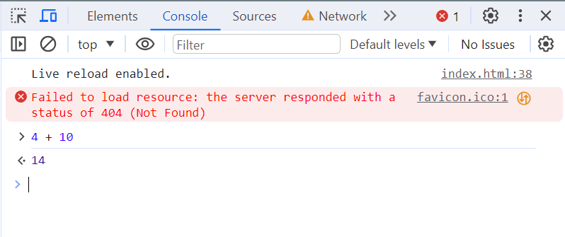
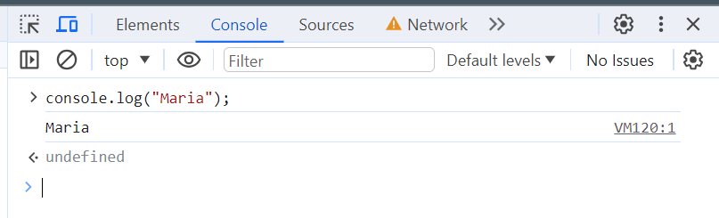
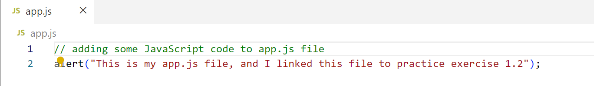
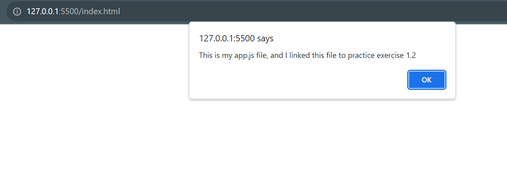

Practice Exercise 1.1


Practice Exercise 1.2


Practice Exercise 1.4
Self-check quiz
Q: What is the HTML syntax to add an external JavaScript file?
Ans: <script src="./app.js"></script>
Q: Can you run JavaScript in a file with a JS extension in your browser?
Ans: We can run JavaScript in a file with a JS extension by linking this .js file along with HTML file.
Q: How do you write a multiple-line comment in JavaScript?
Ans: We can write multiple-line comment like this:
/* Your multiple-line comment
comment in next line
comment in 3rd line */
Q: What is the best way to remove a line of code from running that you might
want to keep as you debug?
Ans: For this purpose we can use comments